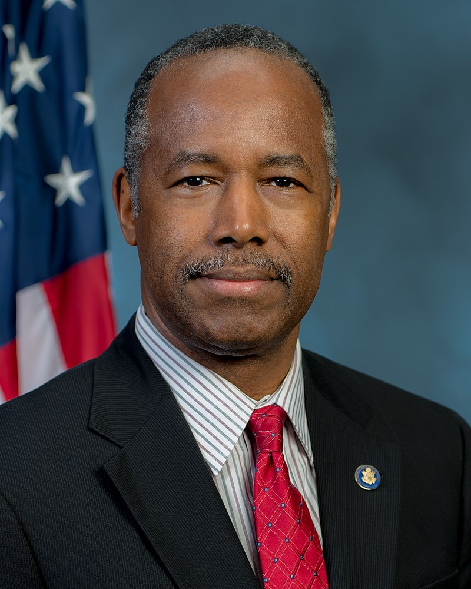

Ben Carson: American neurosurgeon and politician
Ben carson, in full Benjamin Solomon Carson, Sr. , (born September 18, 1951,
Detroit, Michigan, U.S.),
American politician and neurosurgeon
who performed the first successful separation of conjoined twins
who were
attached at the back of the head (occipital craniopagus twins).
The operation, which took place in 1987, lasted some 22 hours and involved
a 70-member surgical team.
Carson also refined a technique known as
hemispherectomy, in which one-half of the brain is removed to prevent
seizures in persons with severe epilepsy.
He later became active in
politics and served as U.S. secretary of housing and urban development
in the administration of U.S. Pres. Donald Trump

.jpeg)
Early life and Medical career
Carson spent his early childhood in Detroit.
His parents divorced when he was eight years old,
and thereafter he lived with his mother and brother,
spending a brief period in Boston and later returning to Detroit.
Although Carson showed potential as a student, he performed poorly in school
until his mother
challenged him and his brother with reading and writing assignments
in addition to their regular schoolwork.
Carson developed a newfound
interest in learning and eventually earned a scholarship to Yale University,
receiving a bachelor’s degree in psychology in 1973.
While at Yale, he met
Lacena (“Candy”) Rustin; the couple married in 1975 and had three children.
He next attended the University of Michigan, earning a medical degree in 1977,
and later Johns Hopkins University Medical School in Baltimore, Maryland,
where he completed a residency in neurosurgery.
In 1984,
after a brief
stint as a senior registrar in neurosurgery at the Sir
Charles Gairdner Hospital,
part of the Queen Elizabeth II Medical
Center in Nedlands, Western Australia, Carson became director of pediatric neurosurgery at Johns Hopkins.
He was one
of the youngest doctors in the United States to earn such a title.
He later also held professorships in plastic surgery,
oncology, and pediatrics at Johns Hopkins.